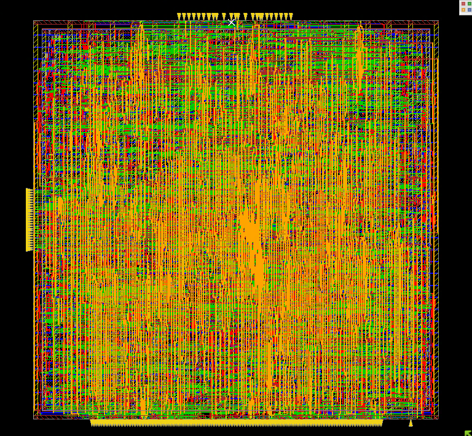
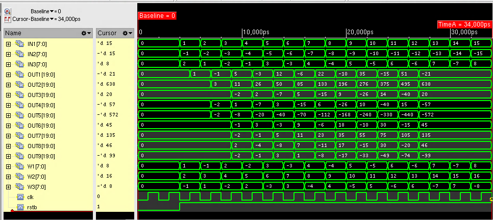
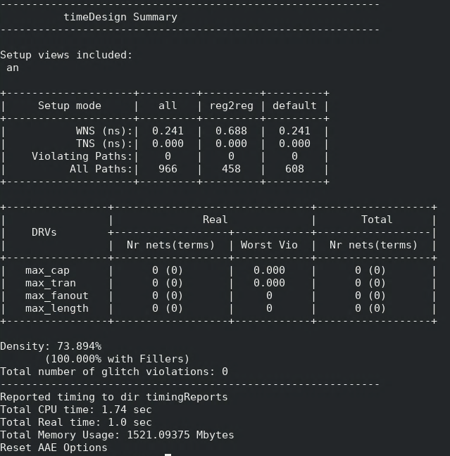
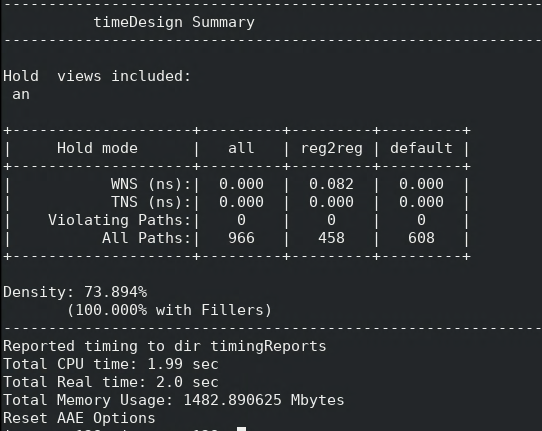
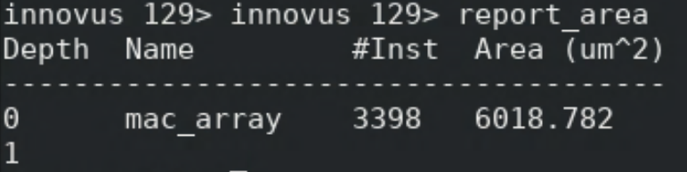
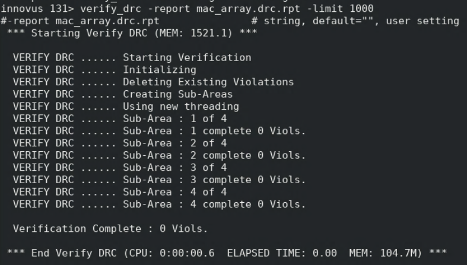
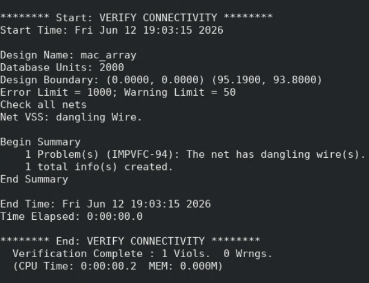

3×3 Systolic
MAC Array
A nine-processing-element array for 3×3 matrix multiplication, with signed 8-bit operands and 20-bit accumulators. I took the design through RTL verification, synthesis, and place-and-route.
- Tools
- Verilog, Xcelium, Genus, Innovus
- Technology
- Nangate 45 nm
- Timing constraint
- 500 MHz
- Post-route setup slack
- +0.241 ns


Architecture
Nine processing elements form the 3×3 systolic array. Signed 8-bit input operands feed multiply-accumulate operations with 20-bit accumulators. Inputs move horizontally and weights move vertically through registered delays. The lab test accumulates for 12 active cycles, then holds all nine outputs while inputs continue changing.
RTL and gate-level simulation
I checked the same signed test vectors in RTL and gate-level simulation. All nine final outputs matched the reference values in both runs: −21, 638, 20, −57, −572, 45, 135, 46, and −99.


Physical implementation
I completed synthesis in Genus and place-and-route in Innovus. The routed design met the 500 MHz timing constraint with +0.241 ns setup slack and zero reported setup or hold violating paths. The implementation report lists 3,398 instances, 6,018.782 µm² of cell area, and 73.894% density.






Layout checks
DRC completed with zero violations. The separate connectivity check reported one VSS dangling-wire violation and zero warnings; that issue remains documented in the submitted lab report.



